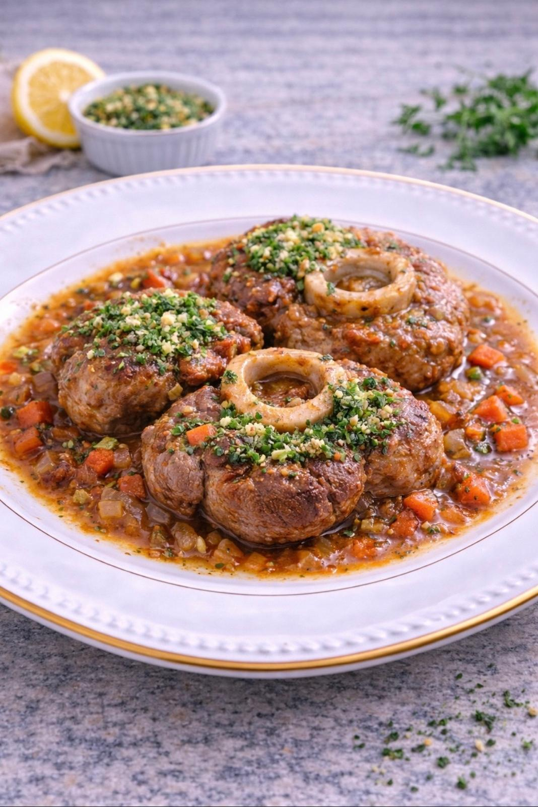

NOS INCONTOURNABLES
Plat du jour

Osso Buco
Jarret de veau braisé, sauce tomate aux aromates.
Populaire

Margherita Bufala
Mozzarella di Bufala et basilic frais.
Populaire

Linguine Carbonara
La vraie recette romaine au pecorino.